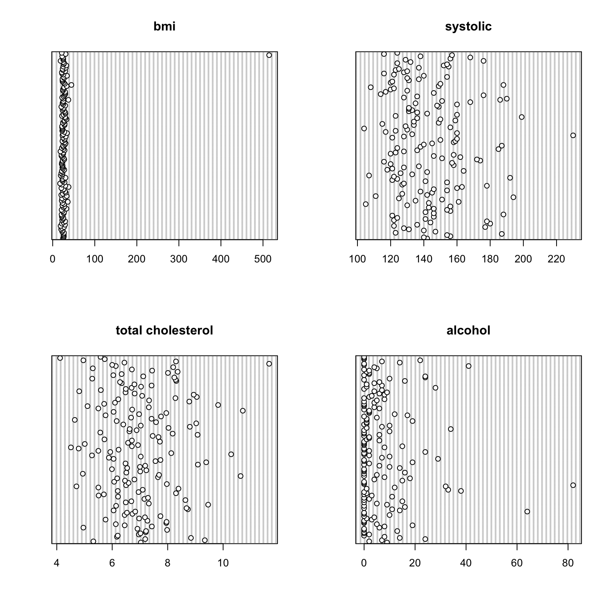
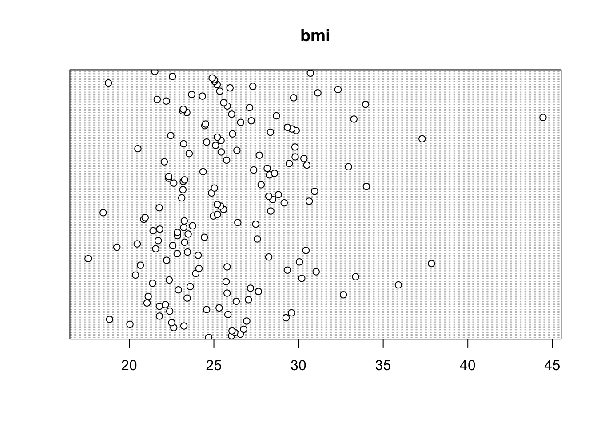
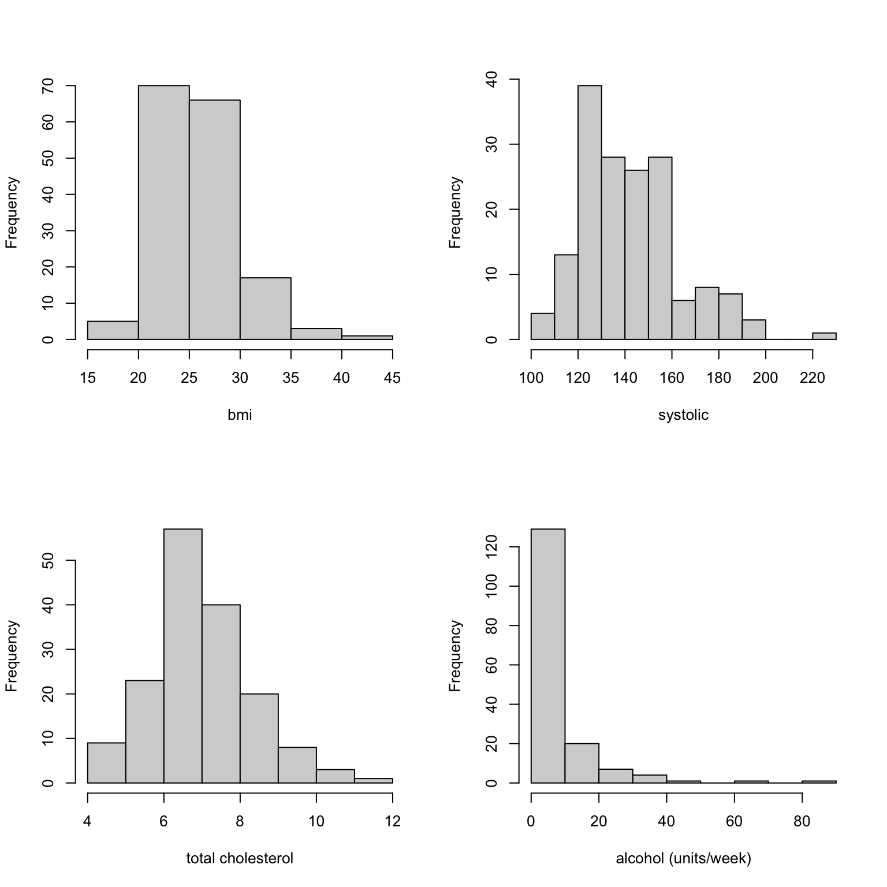
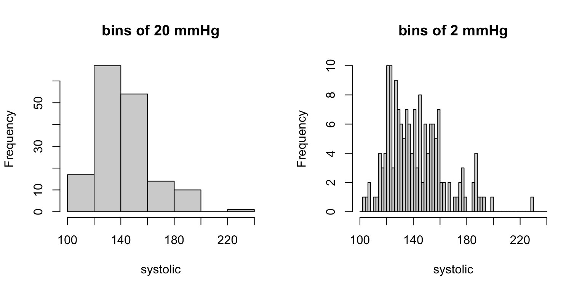
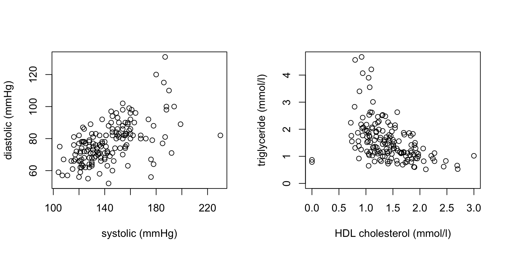
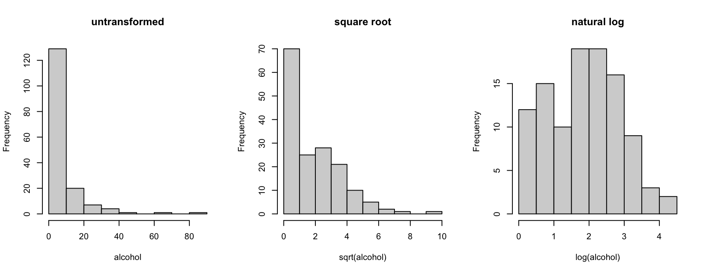
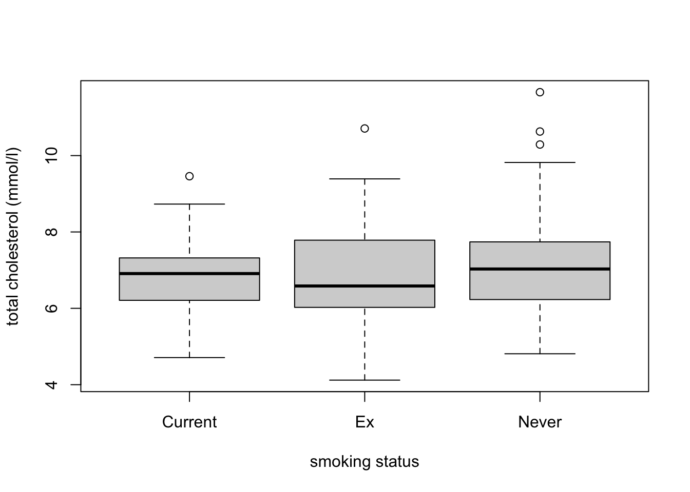
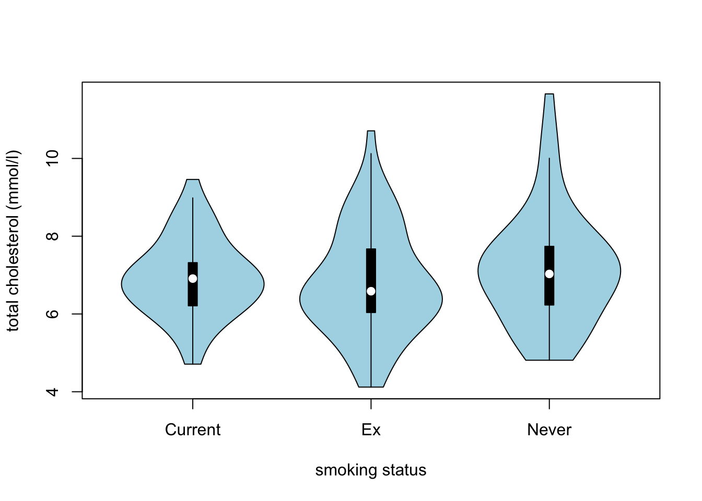
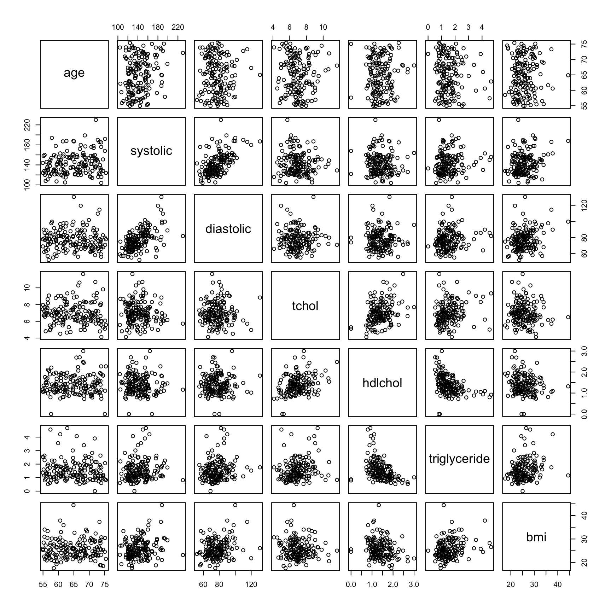

Exercises
Exercise 5: Visualising data using base R
Read Chapter 4 to help you complete the questions in this exercise.
1. As in previous exercises, either create a new R script or continue
with your previous R script in your RStudio Project. Again, make sure
you include any metadata you feel is appropriate (title, description of
task, date of creation etc) and don’t forget to comment out your
metadata with a # at the beginning of the line.
2. You do not need to download anything for this exercise. You
already have ‘cardiacdata.txt’ in the data
directory of your RStudio Project, from Exercise 3. If for some reason
you haven’t, go back to the Data link,
download ‘cardiacdata.xlsx’ and save it as a tab delimited file
called ‘cardiacdata.txt’ as you did before.
3. A quick reminder of what these data are. They come from a cohort study of the risk factors for cardiovascular disease, in which 163 adults aged between 55 and 75 were examined and a range of measurements taken: age and sex, systolic and diastolic blood pressure (mmHg), body mass index (kg m-2), total cholesterol, HDL cholesterol and triglyceride (all mmol l-1), units of alcohol drunk in the previous week, and smoking status. Note that you are importing the original file again, not the cleaned version you exported at the end of Exercise 4. Starting from the raw data every time, and doing your cleaning in a script, is what makes an analysis reproducible.
4. Import the ‘cardiacdata.txt’ file into R using the
read.table() function and assign it to a variable named
cardiac. Use the str() function to display the
structure of the dataset. As you found in Exercise 3, the
sex and smoking variables are coded as
integers, but they are really categories. Create a new variable in the
cardiac dataframe for each of them, recoded as a factor
with meaningful labels (sex is 1 for Female and 2 for Male;
smoking is 1 for Current, 2 for Ex and 3 for Never). Use
the str() function again to check the coding of these new
variables. Almost every plotting function in this exercise treats a
factor differently from a number, so this step is not optional
housekeeping - get it wrong and your boxplots will come out as
nonsense.
cardiac <- read.table('data/cardiacdata.txt', header = TRUE, sep = "\t", stringsAsFactors = TRUE)
str(cardiac)## 'data.frame': 163 obs. of 11 variables:
## $ patno : Factor w/ 163 levels "0049B","0052H",..: 6 54 65 69 101 115 116 2 3 4 ...
## $ age : num 71 68.2 62.9 69.9 65 ...
## $ sex : int 2 2 2 2 2 2 2 1 1 2 ...
## $ systolic : int 142 140 156 154 187 123 147 140 131 128 ...
## $ diastolic : int 63 78 82 102 131 63 66 67 73 62 ...
## $ tchol : num 7.03 5.32 9.34 7.19 8.84 6.17 6.2 6.96 7.02 7.21 ...
## $ hdlchol : num 1.4 0.88 0.92 1.31 1.83 1.58 1.65 1.68 1.57 1.08 ...
## $ triglyceride: num 0.81 3.4 4.67 2.53 1.76 0.73 1.11 0.69 1.29 1.16 ...
## $ bmi : num 24.7 26 26.6 26.2 26.1 ...
## $ alcohol : int 9 2 7 24 14 8 0 2 0 0 ...
## $ smoking : int NA NA NA NA NA NA NA 1 1 1 ...# recode the two categorical variables as factors, keeping the originals
cardiac$Fsex <- factor(cardiac$sex, levels = c(1, 2),
labels = c("Female", "Male"))
cardiac$Fsmoking <- factor(cardiac$smoking, levels = c(1, 2, 3),
labels = c("Current", "Ex", "Never"))
str(cardiac)## 'data.frame': 163 obs. of 13 variables:
## $ patno : Factor w/ 163 levels "0049B","0052H",..: 6 54 65 69 101 115 116 2 3 4 ...
## $ age : num 71 68.2 62.9 69.9 65 ...
## $ sex : int 2 2 2 2 2 2 2 1 1 2 ...
## $ systolic : int 142 140 156 154 187 123 147 140 131 128 ...
## $ diastolic : int 63 78 82 102 131 63 66 67 73 62 ...
## $ tchol : num 7.03 5.32 9.34 7.19 8.84 6.17 6.2 6.96 7.02 7.21 ...
## $ hdlchol : num 1.4 0.88 0.92 1.31 1.83 1.58 1.65 1.68 1.57 1.08 ...
## $ triglyceride: num 0.81 3.4 4.67 2.53 1.76 0.73 1.11 0.69 1.29 1.16 ...
## $ bmi : num 24.7 26 26.6 26.2 26.1 ...
## $ alcohol : int 9 2 7 24 14 8 0 2 0 0 ...
## $ smoking : int NA NA NA NA NA NA NA 1 1 1 ...
## $ Fsex : Factor w/ 2 levels "Female","Male": 2 2 2 2 2 2 2 1 1 2 ...
## $ Fsmoking : Factor w/ 3 levels "Current","Ex",..: NA NA NA NA NA NA NA 1 1 1 ...# $ Fsex : Factor w/ 2 levels "Female","Male": 2 2 2 2 2 2 2 1 1 2 ...
# $ Fsmoking: Factor w/ 3 levels "Current","Ex",..: NA NA NA NA NA NA NA 1 1 1 ...
5. How many patients are there in each combination of smoking status
and sex (hint: remember the table() function?)? Don’t
forget to use the factor recoded versions of these variables. Is the
split between the smoking categories similar for women and men? Are any
of the combinations small enough to worry about if you wanted to compare
them?
##
## Female Male
## Current 26 24
## Ex 15 37
## Never 37 17 # Female Male
# Current 26 24
# Ex 15 37
# Never 37 17
# the pattern is almost reversed between the sexes: most of the men are
# ex-smokers, most of the women have never smoked. The smallest cell has 15
# patients, which is small but not unusable.
# and don't forget the 7 patients with no smoking status recorded
table(cardiac$Fsmoking, cardiac$Fsex, useNA = "ifany")##
## Female Male
## Current 26 24
## Ex 15 37
## Never 37 17
## <NA> 0 7
6. The humble cleveland dotplot is a great way of identifying if you
have potential outliers in continuous variables (see Section
4.2.4). Create dotplots (using the dotchart() function)
for the following variables; bmi, systolic,
tchol and alcohol. Do these variables contain
any unusually large or small observations? Don’t forget, if you prefer
to create a single figure with all 4 plots you can always split your
plotting device into 2 rows and 2 columns (see Section 4.4
of the book).
par(mfrow = c(2, 2))
dotchart(cardiac$bmi, main = "bmi")
dotchart(cardiac$systolic, main = "systolic")
dotchart(cardiac$tchol, main = "total cholesterol")
dotchart(cardiac$alcohol, main = "alcohol")
# the bmi plot is the striking one: a single point sits so far to the right
# that every other patient is squashed into a narrow strip on the left. You
# cannot see the shape of the bmi distribution at all, because one value is
# setting the scale for all 163.
7. You met that extreme bmi value in Exercise 4, when
you checked the ranges with summary() and found a maximum
of 514.60. A body mass index of 514 is not possible: it is 51.46 with
the decimal point in the wrong place. What the dotplot adds is not the
discovery, but the damage. One bad value has made the plot useless for
looking at the other 162 patients. Use the which() function
to identify which observation it is, confirm the value with the square
bracket [ ] notation, set it to NA as you did
in Exercise 4, and then redraw the bmi dotchart. Now look
again at all four plots from Q6. Several points still sit well away from
the rest. Which ones, and what should you do about them?
## [1] 161## [1] 514.6
# Now the bmi plot is readable, and you can see the distribution properly:
# most patients between about 20 and 30, thinning out to a handful above 35,
# with one patient at 51.46.
# What else stands out? One patient with a bmi of 51.46, one with a systolic
# pressure of 230 mmHg, and in the alcohol plot a handful of patients reporting
# 41, 64 and 82 units in a week when the median is 2.
# What should you do about them? NOTHING. Every one of those values is
# perfectly possible. A BMI of 51 is severe obesity, a systolic pressure of 230
# is a hypertensive crisis, and 82 units a week is a great deal of alcohol but
# people really do drink that much. These are not errors, they are patients.
# The difference between this question and the last one is the difference
# between a value that CANNOT be right and a value you did not expect, and only
# the first of those is yours to change. Deleting inconvenient data because it
# looks untidy is scientific fraud.
8. Histograms are the standard way of looking at the distribution of
a continuous variable (see Section
4.2.2). Create histograms for bmi,
systolic, tchol and alcohol,
either separately or in one figure as you did in Q6.
One thing to be careful of is that a histogram can look quite
different depending on the number of ‘breaks’ used. The
hist() function chooses breaks for you, but they are only a
suggestion. Redraw the histogram of systolic twice, once
with wide bins and once with narrow ones, and compare them. Which one
would you show somebody, and what does the difference tell you about how
much you should trust the shape of a histogram?
par(mfrow = c(2, 2))
hist(cardiac$bmi, main = "", xlab = "bmi")
hist(cardiac$systolic, main = "", xlab = "systolic")
hist(cardiac$tchol, main = "", xlab = "total cholesterol")
hist(cardiac$alcohol, main = "", xlab = "alcohol (units/week)")
# wide bins and narrow bins, from the same 163 numbers
par(mfrow = c(1, 2))
hist(cardiac$systolic, xlab = "systolic", main = "bins of 20 mmHg",
breaks = seq(from = 100, to = 240, by = 20))
hist(cardiac$systolic, xlab = "systolic", main = "bins of 2 mmHg",
breaks = seq(from = 100, to = 240, by = 2))
# with 20 mmHg bins the distribution looks smooth and roughly symmetric; with
# 2 mmHg bins it looks spiky and full of gaps, because blood pressure is
# recorded in whole even numbers. The data have not changed, only the picture.
# Treat the shape of a histogram as a rough guide, not as evidence.
9. Scatterplots are great for visualising relationships between two
continuous variables (Section
4.2.1). Plot the relationship between systolic on the x
axis and diastolic on the y axis. How would you describe
this relationship? Now plot hdlchol on the x axis against
triglyceride on the y axis. Which way does that one go, and
does that make clinical sense to you?
Finally, look at alcohol. It is badly skewed, and skew
is a nuisance in a plot because most of the points end up squashed into
a corner. In Exercise 4 Q5 you took logs of triglyceride
and it worked nicely. Try two transformations here, a square root with
sqrt() and a natural log with log(), storing
each as a new variable in the dataframe, then plot histograms of
alcohol alongside both. One of the two goes badly wrong.
Which one, and why? (hint: what is the smallest value of
alcohol?)
par(mfrow = c(1, 2))
# a clear positive relationship, as you would expect: the two numbers are
# measurements of the same thing at different points in the heartbeat
plot(cardiac$systolic, cardiac$diastolic,
xlab = "systolic (mmHg)", ylab = "diastolic (mmHg)")
# this one slopes the other way: patients with high HDL cholesterol tend to
# have low triglyceride. That is a real and well known pattern
plot(cardiac$hdlchol, cardiac$triglyceride,
xlab = "HDL cholesterol (mmol/l)", ylab = "triglyceride (mmol/l)")
cardiac$alcohol_sqrt <- sqrt(cardiac$alcohol)
cardiac$alcohol_log <- log(cardiac$alcohol)
par(mfrow = c(1, 3))
hist(cardiac$alcohol, main = "untransformed", xlab = "alcohol")
hist(cardiac$alcohol_sqrt, main = "square root", xlab = "sqrt(alcohol)")
hist(cardiac$alcohol_log, main = "natural log", xlab = "log(alcohol)")
## [1] 58# The log fails. 58 of the 163 patients reported drinking no alcohol at all, and
# log(0) is -Inf, so R quietly drops more than a third of your data from the
# plot with nothing more than a warning. The square root works, because sqrt(0)
# is 0, and it pulls the long tail in nicely.
# Triglyceride logged cleanly in Exercise 4 because it has no zeros in it.
# Alcohol does. Check the minimum before you take the log of anything.
10. When visualising differences in a continuous variable between levels of a factor (categorical variable) then a boxplot is your friend (avoid using bar plots - Google ‘bar plots are evil’ for more info). Create a boxplot to visualise the differences in total cholesterol at each level of smoking status (don’t forget to use the recoded version of this variable you created in Q4). Include x and y axis labels in your plot. Make sure you understand the anatomy of a boxplot before moving on - please ask if you’re not sure (also see Section 4.2.3 of the book).
An alternative to the boxplot is the violin plot, which combines a
boxplot with a kernel density
plot and shows you the shape of the distribution rather than just
its quartiles. You will first need to install the vioplot
package from CRAN and make it available with
library(vioplot). The vioplot() function then
works in much the same way as boxplot(). Draw the same
comparison as a violin plot and compare the two.
# note: Fsmoking is the recoded smoking variable created in Q4
boxplot(tchol ~ Fsmoking, data = cardiac, xlab = "smoking status", ylab = "total cholesterol (mmol/l)")
# violin plot. install.packages('vioplot') first if you have not already
library(vioplot)
vioplot(tchol ~ Fsmoking, data = cardiac, xlab = "smoking status", ylab = "total cholesterol (mmol/l)",
col = "lightblue")
# the three groups look remarkably similar. That is a perfectly good result: a
# plot that shows you there is nothing much to see has still told you
# something, and is a lot more honest than hunting for a variable that does
# show a difference.
11. To explore the relationships between several continuous variables
at once it’s hard to beat a pairs plot. Create a pairs plot for the
variables; age, systolic,
diastolic, tchol, hdlchol,
triglyceride and bmi (see Section
4.2.5 of the book for more details). If it looks a little cramped in
RStudio then click on the ‘zoom’ button in the plot viewer to see a
larger version.
One of the useful things about pairs() is that you can
choose what goes into each panel. Modify your plot to add a smoother (a
wiggly line) to the lower triangle, which makes the shape of each
relationship much easier to see. The book and ?pairs show
you how. Then get the correlation coefficients themselves with the
cor() function, which takes a whole dataframe and returns a
matrix of them (you will need its use argument to cope with
the missing values). Which pair of variables is most strongly related,
and which variable is related to almost nothing?
plot_vars <- c("age", "systolic", "diastolic", "tchol", "hdlchol", "triglyceride",
"bmi")
# vanilla pairs plot
pairs(cardiac[, plot_vars])
# panel.smooth adds the wiggly line. Note that it keeps its dot: it is a base R
# function, not something you wrote
pairs(cardiac[, plot_vars], lower.panel = panel.smooth)
# and the correlations themselves, in one line
round(cor(cardiac[, plot_vars], use = "pairwise.complete.obs"), 2)## age systolic diastolic tchol hdlchol triglyceride bmi
## age 1.00 0.21 -0.03 -0.03 0.02 -0.07 0.03
## systolic 0.21 1.00 0.56 -0.08 -0.05 0.11 0.23
## diastolic -0.03 0.56 1.00 -0.02 0.02 0.14 0.25
## tchol -0.03 -0.08 -0.02 1.00 0.32 0.18 -0.07
## hdlchol 0.02 -0.05 0.02 0.32 1.00 -0.43 -0.20
## triglyceride -0.07 0.11 0.14 0.18 -0.43 1.00 0.25
## bmi 0.03 0.23 0.25 -0.07 -0.20 0.25 1.00# systolic and diastolic are the most strongly related pair (r = 0.56), which
# is no surprise. hdlchol and triglyceride are the next strongest (r = -0.43)
# and negative. age is related to almost nothing here, its largest correlation
# with anything being 0.21, and that is worth thinking about: everyone in this
# study is between 55 and 75, so there simply is not enough spread in age for a
# relationship to show itself. A variable can look unimportant purely because
# of who was recruited.
12. Every plot so far has appeared in the RStudio plot pane, which is
fine while you are exploring but no use at all when you need a figure in
a Word document, a PowerPoint slide or a report. Getting a plot out of R
is a three step sandwich. You open a graphics device that is a file
rather than a window, you draw the plot exactly as you have been doing,
and then you close the device with dev.off(). Nothing
appears on screen while you do it, and if you forget the
dev.off() your file will be unreadable (see Section
4.5 of the book).
Redraw your boxplot from Q10 and save it twice into the
output directory you created in Exercise 1, once as a pdf
using pdf() and once as a png using png().
Open both files outside RStudio and try dropping the png into a Word
document. Which format would you use for what, and why? (hint: enlarge
each of them a long way and see what happens)
# pdf is a vector format: the file stores the instructions for drawing the plot,
# so it stays perfectly sharp however far you enlarge it. Sizes are in inches.
pdf('output/ex5_cholesterol.pdf', width = 7, height = 5)
boxplot(tchol ~ Fsmoking, data = cardiac,
xlab = "smoking status", ylab = "total cholesterol (mmol/l)")
dev.off()## quartz_off_screen
## 2# png is a bitmap: a grid of pixels, which goes blurry when enlarged. Word and
# PowerPoint handle it happily though. Always set res, because the default of
# 72 dpi looks fine on screen and disappointing on a slide or on paper.
png('output/ex5_cholesterol.png', width = 7, height = 5, units = "in", res = 300)
boxplot(tchol ~ Fsmoking, data = cardiac,
xlab = "smoking status", ylab = "total cholesterol (mmol/l)")
dev.off()## quartz_off_screen
## 2## [1] "ex5_cholesterol.pdf" "ex5_cholesterol.png"# tiff() works in exactly the same way and is what journals usually ask for.
# Rule of thumb: pdf if it is going to be printed or enlarged, png at 300 dpi
# if it is going into Word or PowerPoint, tiff if a journal asks for it.
# Whichever you choose, save it from R. Never screenshot the plot pane, and
# never paste a plot in at 72 dpi and hope nobody notices.
End of Exercise 5